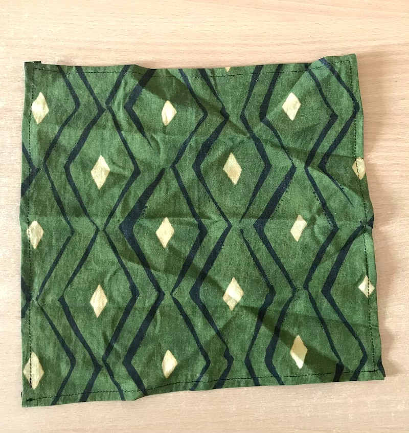
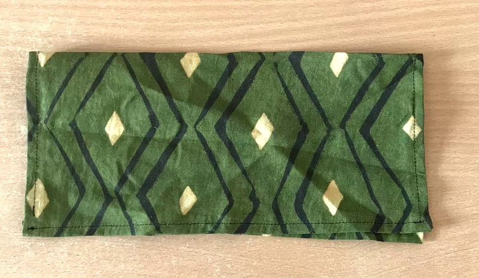
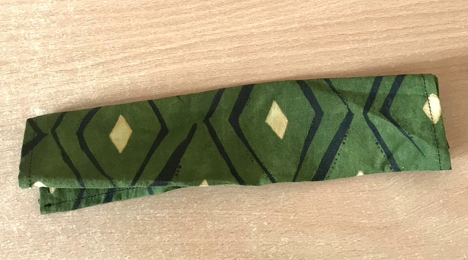
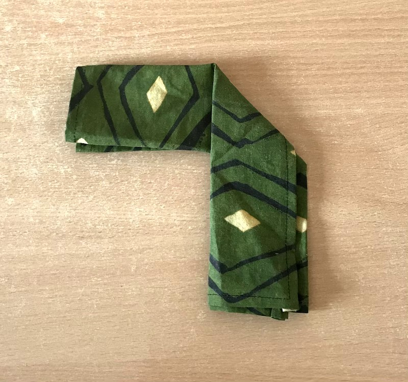
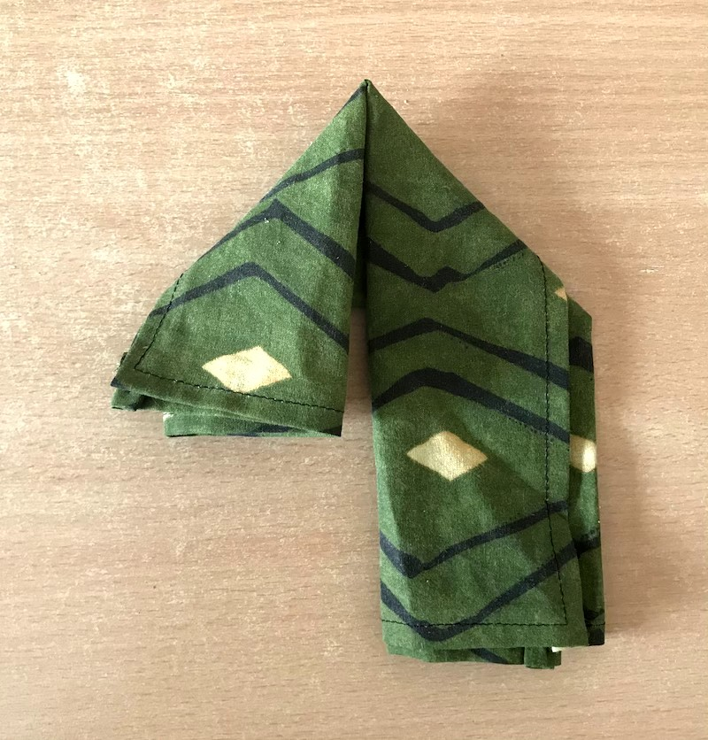
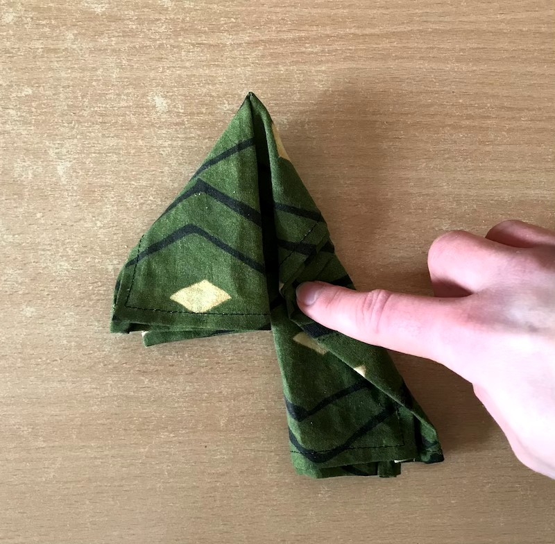
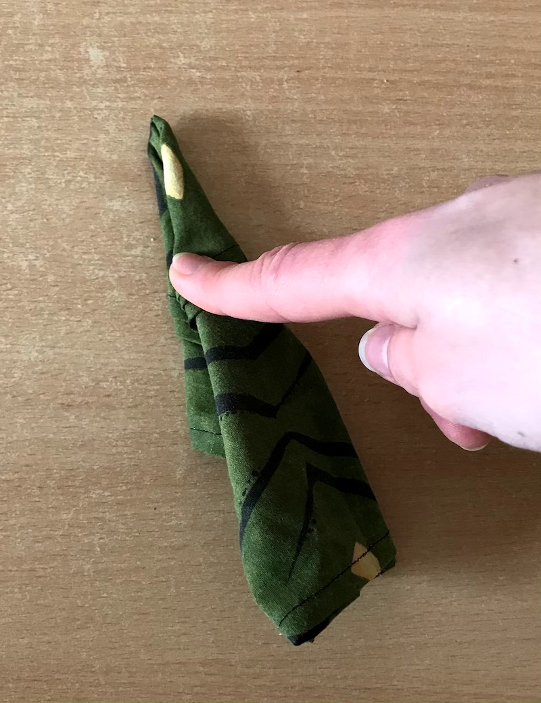
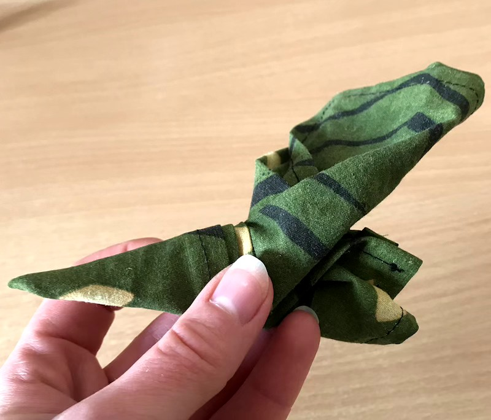
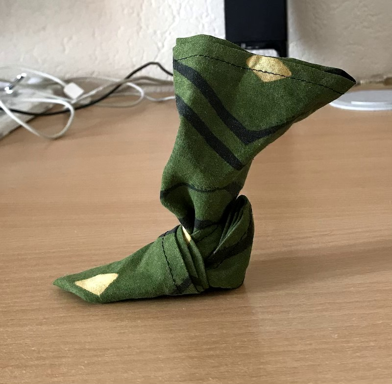
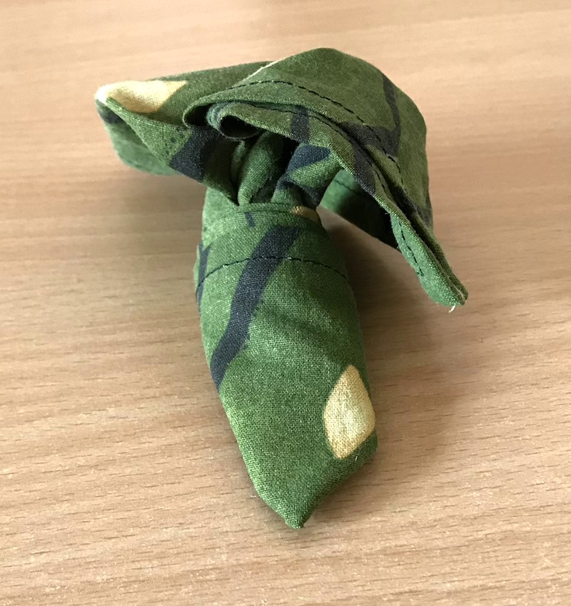

J’ai récemment découvert un pliage de serviette de table très amusant. Le monsieur qui me l’a montré a dit qu’il faisait toujours son petit effet sur une table de Noël. Je veux bien le croire. Il fait un peu babouche de lutin. Il suffit de lui planter une canne à sucre et le tour est joué ! Petit tuto.
Tout d’abord, il faut une serviette de table carrée, assez grande et rigide. J’ai aussi essayé avec un mouchoir en tissu. Ça marche, mais ça ne tient pas très bien.


1 - plier la serviette en 2

2 - replier la serviette en 2, ouverture vers le bas

3 - attraper le côté droit et le ramener sur le milieu, à un peu plus de la moitié, vers le bas

4 - attraper le côté gauche et le faire rejoindre le droit, toujours vers le bas

5 - rabattre une nouvelle fois le côté gauche sur le milieu, vers le bas, sur lui-même6 - rabattre encore une fois le côté droit sur le milieu, vers le bas, sur lui-même, pour qu’il rejoigne le droit

7 - replier les deux côtés l’un sur l’autre, ouverture vers le bas; le plus long côté qui dépasse est vers soi

8 - maintenir le pli entre le pouce et l’index, attraper le plus grand côté et le remonter en le pliant sur lui-même et en le passant devant le petit côté

9 - attraper le petit côté et le rentrer le plus possible dans le pli, en passant par-dessus le pli du grand côté, pour renforcer le pied
À ce stade, le chausson (ou babouche) tient tout seul debout. C’est trop mignon ! Il reste encore une petite chose à faire pour le rendre plus joli.

10 - attraper le grand côté qui dépasse au-dessus du chausson et le répartir de chaque côté pour former l’entrée de la cheville
Et voilà ! J’espère que c’est bien clair tout ça. Voici une petite vidéo, au cas où. Bon Fun ^^.